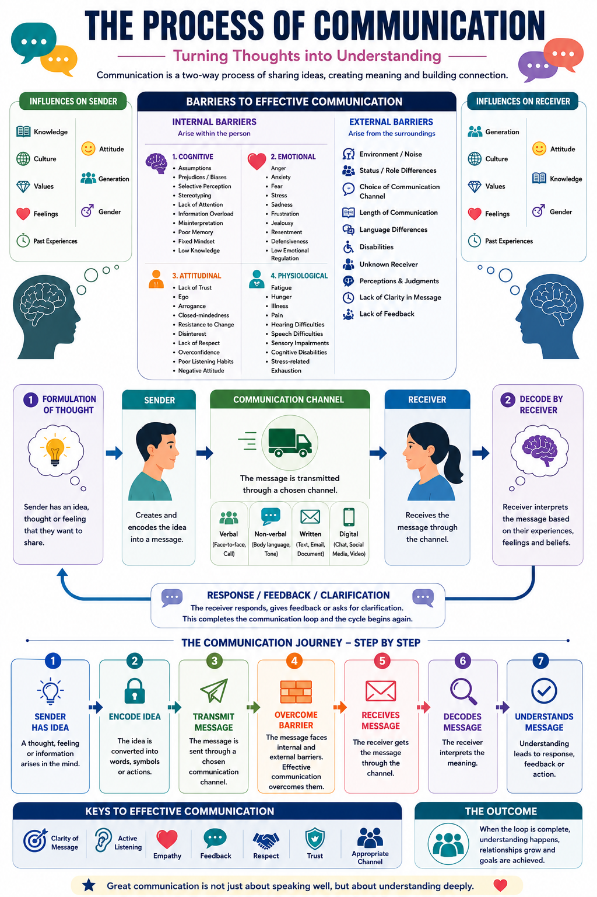

The Process of Communication
Turning thoughts into understanding. Communication is a two-way process of sharing ideas, creating meaning, and building connection — and it's a skill you can actually train.
What this module is about
Every day you send and receive hundreds of messages — texts, looks, jokes, silences, arguments, apologies. Most of the time it works. Sometimes it goes sideways and you're left thinking "that's not what I meant!"
This module takes you behind the scenes of how communication actually works: how a thought travels from one mind to another, why it sometimes gets lost on the way, and what skilled communicators do differently. By the end, you'll be able to spot what's going wrong in a conversation and fix it.
You'll learn to
Map the loop
Follow a message from a thought all the way to being understood — and back again.
Pick your channel
Know when to talk, text, write, or wait — and why the channel changes the message.
Break barriers
Recognise the internal and external blocks that distort what you say and hear.
Use the keys
Practise the seven habits that make people feel genuinely understood.
What is communication, really?
It's not just talking. Communication only happens when your meaning actually arrives in someone else's mind — and theirs arrives in yours.
A two-way street
Picture two brains. One has an idea, a feeling, or some information it wants to share. To get it across, it has to turn that fuzzy inner thing into words, tone, and gestures. The other brain then has to take all that and rebuild the idea inside its own head, using its own experiences and feelings.
If both brains end up with roughly the same picture, communication succeeded. If they don't, something got lost in the journey — even if plenty of words were spoken.
Why it matters for you right now
Relationships
Friendships and family run on being understood — and on repairing things when you're not.
Learning
Asking a clear question or explaining your thinking is half of doing well in school.
Your future
Interviews, teamwork, leadership — almost every path rewards people who can be understood.
Write about a time your message got "scrambled" like the "k" example. What did you mean, and what did the other person hear?
The communication loop
This is the engine under every conversation. Tap each stage to see what's happening — then press play to watch a message travel the whole loop.
Tap a stage above 👆
Each one is a step a thought takes on its way from one mind to another. The loop never really ends — every reply starts a new turn.
The journey, step by step
Slow the loop right down and you can see seven distinct steps a message passes through. Notice step 4 — barriers don't break communication, skilled communicators just push through them.
Channels: how we send messages
The channel is the road your message travels. The same words on different roads arrive differently — choosing the right one is half the skill.
Which channel do you reach for too often? When might switching channels have helped a conversation go better?
What shapes the sender and receiver
Nobody communicates from nowhere. Both people bring an invisible backpack of influences that shape how they encode and decode every message.
🧑🏫 The sender brings…
…all of this into how they say it.
🧑🎓 The receiver brings…
…all of this into how they hear it.
Barriers: what gets in the way
Barriers are anything that distorts the message between two minds. Some come from inside a person; some come from the surroundings. Spotting which kind it is tells you how to fix it.
Internal barriers arise within the person. Tap each to open it.
External barriers arise from the surroundings — the situation around the conversation.
Which barrier trips you up most — maybe assumptions, defensiveness, ego, distraction, or stress? What's one small thing you could do about it?
The seven keys to great communication
If barriers are what go wrong, these are what go right. Each one comes with a small move you can practise this week.
Putting it all together
When the loop completes — message sent, barriers cleared, message understood, feedback given — something good happens.
Understanding happens
Two minds end up holding the same picture.
Relationships grow
People feel heard, so trust deepens.
Goals are achieved
Things actually get done, together.
The whole picture, on one page
Everything in this module — the loop, the channels, the influences, the barriers, the keys — comes together in this map. Take it in as a whole, then tap it to open the full-size version.

Your one-page recap
🔁 The loop
Thought → encode → channel → receive → decode → feedback, and round again.
📡 The channels
Verbal, non-verbal, written, digital — match the channel to the message.
🎒 The backpacks
Both people bring knowledge, culture, values, feelings, and past experiences.
🧱 The barriers
Internal (in the person) and external (in the surroundings).
🔑 The keys
Clarity, listening, empathy, feedback, respect, trust, right channel.
❤ The aim
Not speaking well — being understood deeply.
Name one specific thing you'll try in your next tricky conversation, using something from this module.
Show what you know
Eight questions covering the whole module. Pick an answer for each — you'll see your score at the end.